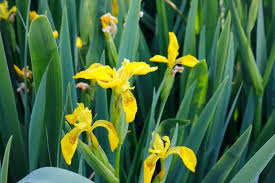

La rosa es quizás una de las flores más reconocidas
y populares en todo el mundo. Con sus pétalos suaves
y delicados, la rosa viene en una amplia gama de colores,
desde el clásico rojo pasión hasta el delicado rosa, el
vibrante amarillo y el puro blanco. Además de su belleza
visual, la rosa también es apreciada por su aroma dulce
y distintivo. Se ha asociado durante mucho tiempo con el amor,
la pasión y el romance, lo que la convierte en una opción
popular para regalos románticos y ocasiones especiales
como bodas y aniversarios.
el lirio

El lirio es una flor elegante y majestuosa que se destaca por sus
tallos altos y sus flores grandes y
llamativas. Con sus pétalos acampanados y
sus colores vibrantes, como el blanco puro, el rosa
suave y el amarillo brillante, el lirio agrega un
toque de gracia y sofisticación a cualquier arreglo
floral. Además de su belleza estética, el lirio también
tiene un aroma distintivo y encantador. Se asocia comúnmente
con la pureza, la inocencia y la renovación, lo que lo convierte
en una opción popular para celebrar ocasiones como
nacimientos, bautizos y bodas.
el tulipan
El tulipán es una flor primaveral encantadora conocida por su forma única y sus brillantes
colores. Con sus
tallos delgados y sus pétalos en forma de copa, el tulipán viene en una amplia variedad de tonos, desde el
rojo intenso y el amarillo brillante hasta el morado profundo y el blanco puro. Esta diversidad de colores y
formas hace que los tulipanes sean una opción versátil para arreglos florales y decoraciones. Además de su
belleza visual, el tulipán también es apreciado por su elegancia simple y su simbolismo de amor y
felicidad ,
lo que lo convierte en una opción popular para una amplia gama de ocasiones, desde cumpleaños y aniversarios
hasta eventos formales y celebraciones de primavera.